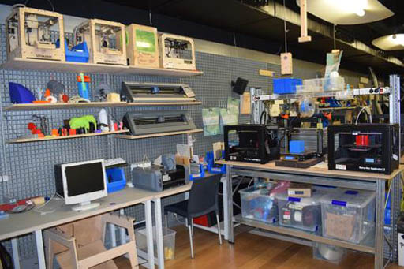

Una de las peculiaridades de Medialab es que tiene un laboratorio de fabricación digital o Fablab, en el que podemos encontrar impresoras 3D, una cortadora láser y una CNC o fresadora. Su uso está limitado a grupos de trabajo cuyos proyectos requieren utilizar este tipo de máquinas.
El espacio del Fablab está en el sótano, justo debajo de la Plaza de las Letras, por lo que sus ventanas quedan a ras del suelo a nivel de la calle y a gran altura en el interior. Aunque se sitúa fuera de la estructura del edificio original, se accede a través de la nave Alameda, bajando un piso por el ascensor o por una escalera de madera que está a la derecha de la puerta principal.
La escalera arranca frente al puesto de información y baja entre paredes de madera curvándose ligeramente hacia la izquierda, paralela a la fachada principal. Una vez abajo, tras este tramo de 14 peldaños, nos encontramos a la derecha con el Fablab y a la izquierda con el túnel que lleva al ascensor.
El ascensor de Medialab tiene dos puertas enfrentadas, cuando lo usamos para acceder al Fablab, entramos por una y salimos por la otra. Atravesando un túnel en curva con rampa ascendente, desembocamos frente a la puerta del Fablab, dejando a nuestra derecha la escalera que sube a la entrada de Medialab. Este túnel está recubierto en su totalidad, paredes y techo, de madera clara de superficie rugosa, sin tratar y sin lijar. El suelo es de parqué barnizado del mismo color. Antes de entrar, fijadas en la pared de la izquierda, hay unas letras en relieve que forman la palabra Fablab, con la tipografía original que decora las fachadas exteriores del edificio.
⇧ Volver arriba
El Fablab es una sala grande y alargada, dividida por una pared de cristal en dos espacios: una antesala más pequeña y a continuación la zona de trabajo. A diferencia del resto de Medialab, el suelo es de madera, las paredes son de color plata y el techo negro, con tubos de iluminación cubiertos por grandes pantallas blancas ovaladas que proyectan la luz hacia abajo. Al ser un espacio subterráneo, la única conexión que tiene con la calle es un ventanal estrecho, de 80 centímetros de altura, que recorre toda la parte superior de la pared derecha.
La antesala tiene forma trapezoidal, más ancha en la entrada y más estrecha al fondo. La pared por la que entramos está forrada de madera; la de la izquierda está cubierta casi en su totalidad por armarios metálicos, con puertas de rejilla, repletos de materiales; la pared de la derecha tiene baldas bajo a ventana, en las que se exponen piezas creadas por los grupos de trabajo. Junto a esta pared hay mesas y sillas.
Si continuamos de frente, llegamos a la puerta de cristal por la que accedemos a la sala de trabajo del Fablab, que también tiene forma trapezoidal, pero en este caso ensanchándose hacia el fondo.
Pegados a la pared de la derecha, bajo las ventanas, encontramos varios grupos de mesas y sillas. En las más cercanas a la puerta hay cuatro ordenadores de pantalla grande para hacer modelado 3D y otros diseños. Entre la pared y las mesas hay una balda corrida y una hilera de lámparas rectangulares encajadas en el muro.
La pared de la izquierda está cubierta por una rejilla de metal con baldas de madera, donde hay cajas con herramientas y cables, muestras de proyectos pasados y piezas impresas en 3D. A lo largo de esta pared, en diferentes mesas, tenemos las impresoras 3D, varios ordenadores, un puesto de electrónica, con flexo, soldadores y otros instrumentos, y al fondo la cortadora láser.
En el centro de la estancia, paralelo a las paredes laterales, hay un gran banco de trabajo con herramientas.
La pared del fondo del Fablab tiene la parte izquierda de cristal y la derecha de madera. La puerta de la pared de cristal conduce a la sala de la CNC o fresadora, donde también hay sierras y taladros, y la puerta de la pared de madera lleva a los baños y a una pequeña cocina. Entre una y otra hay una estantería llena de planchas de madera y vinilo para usarlas en la cortadora láser.
⇧ Volver arriba
Todas las máquinas del Fablab, las impresoras 3D, la cortadora láser y la CNC, se controlan mediante ordenador.
Actualmente hay 5 impresoras 3D de escritorio que permiten crear objetos tridimensionales con un volumen máximo de 25 x 21 x 21 centímetros. Las piezas se van construyendo capa a capa, de abajo arriba, con un hilo muy fino de filamento fundido. Estas máquinas tienen una base metálica, que se mueve hacia delante y hacia atrás, y una boquilla colocada encima, que se desplaza horizontalmente y en altura a lo largo de unos ejes. El filamento que más se utiliza se llama PLA, un tipo de plástico biodegradable de origen vegetal.
La cortadora láser tiene forma de arcón. Mide alrededor de 130 centímetros de ancho, 80 de profundidad y tiene un metro de altura. En la parte de arriba hay una tapa que se levanta para colocar en su interior la pieza que queremos cortar o grabar: madera, vinilo u otro material. Para hacer un grabado se usa poca potencia y mucha velocidad, de forma que el láser solo tenga tiempo de quemar el material sin llegar a cortarlo. Para hacer un corte, se aumenta la potencia y se baja la velocidad, de modo que el láser queme más fuerte y durante más tiempo. La máquina tiene un tubo metálico para extraer el humo que se produce al quemar las piezas.
La fresadora o CNC (Control Numérico Computarizado) es una máquina de gran formato que se utiliza para cortar, desgastar o grabar diversos materiales, como maderas, metales, plásticos, etc. Esto lo hace utilizando un elemento mecánico llamado fresa, parecido a la broca de un taladro. El material se coloca sobre una mesa grande, de patas metálicas, y la fresa se mueve por encima, desplazándose a lo largo de unos rieles. Permite trabajar con piezas de hasta 120 x 120 centímetros. Por seguridad la CNC tiene su propia sala, ya que al funcionar desprende astillas.
⇧ Volver arriba
⇦ Anterior: La Cosa
⇨ Siguiente: Nave Alameda - Planta 0